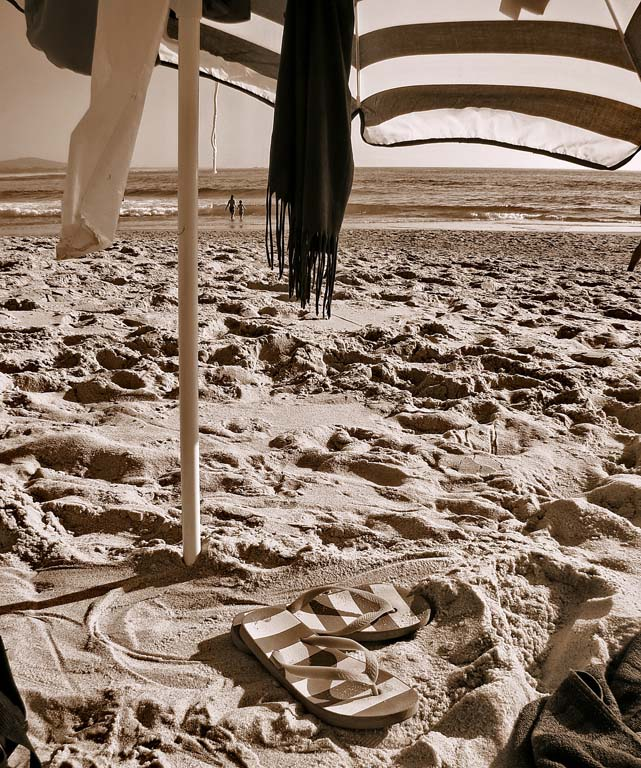
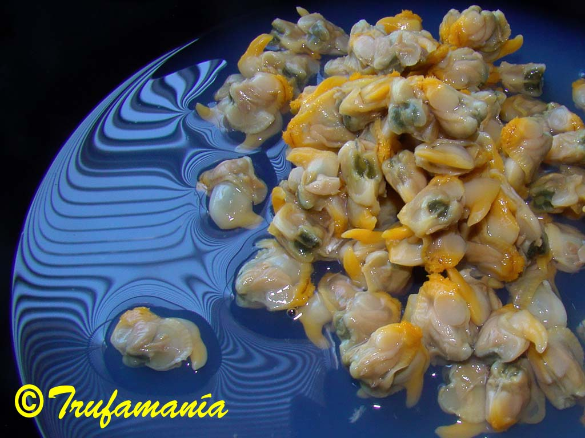

THROUGH THE NOSE

It arrived hermetically sealed, hidden in dark soil with a generous, fertile look about it. I decided that stepping out into the sunny garden would be the right way to open my senses before lifting the lid.
With birdsong as a backdrop, I breathed in deeply the aroma concentrated during its journey; mind blank, eyes closed, every receptor primed and ready… and I was suddenly on holiday at the seaside.
{kind=link}

{kind=link}
During the summers of my childhood I had the privilege of escaping Madrid with my family to the coast. Eager to smell and feel the sea, impatient with the unavoidable maternal ritual of being lathered head to toe in sun cream, I would slip away at the first opportunity to roll in the wet sand at the water’s edge — the way only children can do without looking quite mad — and then run off to explore the rocks, letting the sun and the foam wash over me while I waited for the time and the permission to swim.
A deep, rich scent of sea, of sun cream, of damp beach sand, of shoreline rocks draped in seaweed, of summer heat with the whole long day still ahead — all of this rose from that cool, soft earth as I plunged my fingers in and quickly found the treasure I knew was waiting there.
I opened my eyes and there it was: a dull, unremarkable lump. I gathered my senses once more, brought the truffle to my nose and then… it was Sunday.
My mother, ever anxious that no one should go hungry, would lay out not only a dessert alongside the two main courses but an aperitif as well. Especially on Sundays, when we all sat together in the dining room, little dishes of sobrasada, paté, olives, gherkins, pickled onions, savoury crackers, corn puffs and mussels in escabeche covered every inch of the table. And occasionally, she would add my favourite: a tin of natural cockles with a splash of vinegar. There were never enough, and I would try to fit several into my mouth at once, the better to savour them.
{kind=link}


The truffle smelled intensely of that beloved delicacy, as though someone had let me swallow a whole handful all at once.
You had warned me, Encarna, that the soil of a truffle ground smells wonderful; you asked me, Antonio, how I would describe the aroma of such a prized thing.
Well, to me, the winter earth and the winter truffle smell of summer, and of cockles on a Sunday…
| Eva García |
{kind=link}